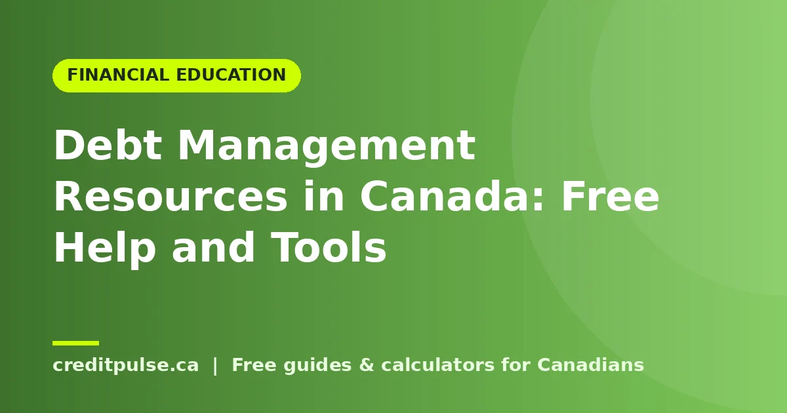

Debt Management Resources in Canada: Free Help and Tools

When debt starts to feel unmanageable, the hardest part is often knowing where to turn. Canada has a solid set of free and low-cost resources (government tools, non-profit counsellors, and regulated professionals), but they are spread across many different websites.
This page brings the main options together in one place: what each resource is, who it helps, what it costs, and when to use it. It is written for individuals, and for librarians, settlement workers, teachers and community staff who help others with money questions.
Not sure where to start? Build a budget first. Free tools like the FCAC Budget Planner or the Credit Pulse Budget Calculator show how much you can actually put toward debt. That number decides which resource below fits you.
Quick reference: debt help in Canada
| Resource | What it does | Cost | Use it when |
|---|---|---|---|
| FCAC Budget Planner | Builds a personalized budget | Free | You need to see where your money goes |
| FCAC Credit Card Payment Calculator | Shows how long card balances take to repay | Free | You carry credit card debt |
| Credit Pulse calculators | Budget split and multi-debt payoff plans | Free, no sign-up | You want a payoff date and plan |
| Free credit reports | Show the debts lenders see | Free | You want to check accuracy or find forgotten accounts |
| Non-profit credit counselling | Budget review, advice, possible debt management plan | First session often free; plans may have fees | You are struggling to keep up with payments |
| Licensed Insolvency Trustee | Consumer proposals and bankruptcy | Regulated fees | You cannot realistically repay what you owe |
| 211 | Connects you to local community and social services | Free | You need help with food, housing or other essentials |
1. Free government tools
FCAC Budget Planner
The Financial Consumer Agency of Canada (FCAC) is the federal agency that protects consumers of financial products. Its free Budget Planner builds a customized budget in a few steps, lets you save and update it through a unique link, and gives personalized feedback.
FCAC Credit Card Payment Calculator
The Credit Card Payment Calculator shows how long it takes to pay off a card balance at different payment amounts, which makes it a quick reality check on minimum payments.
FCAC guidance on credit counselling
FCAC's page on getting help from a credit counsellor explains what to ask before working with any agency, including which services they offer and what they charge.
2. Free calculators for planning repayment
Once you know your budget, a repayment calculator turns it into a plan with a date. Credit Pulse offers two free calculators, built for Canadians, that need no sign-up:
- Budget Calculator splits your take-home pay into needs, wants and savings or debt, so you can see what is available for repayment.
- Debt Payoff Calculator lets you enter several debts and compare payoff methods, such as paying the highest interest rate first or the smallest balance first. It shows your debt-free date and total interest.
For a plain-language explanation of those payoff methods, with a worked example, see our guide to debt repayment strategies in Canada.
3. Your free credit reports
Canada's two national credit bureaus, Equifax Canada and TransUnion Canada, both let you get your credit report for free. Checking both is worth doing before you make a debt plan:
- It shows every account lenders see, including ones you may have forgotten.
- You can spot errors, such as an account that is not yours or a payment wrongly marked late, and dispute them with the bureau.
- It gives you a baseline to track as you pay debts down.
Checking your own credit report does not lower your credit score.
4. Non-profit credit counselling
A credit counsellor reviews your income, expenses and debts and explains your options, from budgeting changes to a formal referral. In Canada, both non-profit organizations and for-profit companies offer credit counselling, so it is worth checking who you are dealing with.
- Credit Counselling Canada is a national association of non-profit credit counselling agencies. Its website helps you find an accredited member agency near you.
- Money Mentors is a non-profit credit counselling agency serving Albertans.
- In Quebec, budget and credit counselling is often provided by Associations coopératives d'économie familiale (ACEF).
What it costs: many non-profit agencies offer the first consultation free. If you enter a debt management plan (one monthly payment through the agency, often with reduced interest negotiated with creditors), there may be a monthly fee. FCAC also notes that many agencies receive a percentage of what you repay through such programs. Ask about every fee up front.
5. Licensed Insolvency Trustees: consumer proposals and bankruptcy
When repayment is no longer realistic, two legal options exist under federal law. Both are supervised by the Office of the Superintendent of Bankruptcy, and a Licensed Insolvency Trustee (LIT) is the only professional authorized to administer them.
- Consumer proposal: an offer to your creditors to repay part of what you owe, or to take longer to repay it. It is available if your total debts are under $250,000, not counting your mortgage. Payments can be spread over up to five years.
- Bankruptcy: a legal process that releases you from most unsecured debts, with conditions. A first bankruptcy with no surplus income is typically shorter than one with surplus income.
Both options appear on your credit report for years and affect your ability to borrow. An initial meeting with an LIT to review your options is typically free, and they must explain every alternative, not only these two.
6. Community help: 211
Debt problems rarely arrive alone. If you are struggling to cover food, rent or utilities, 211 (by phone, or at 211.ca) connects you with local community, social and government services in most of Canada. Easing pressure on essentials can stop new debt from piling up while you work on the old.
Which resource do I need?
- "I'm keeping up, but I want to pay debt off faster." Budget Planner or Budget Calculator, then the Debt Payoff Calculator.
- "I'm only making minimum payments and the balances aren't moving." Run your numbers in a payoff calculator, then book a free session with a non-profit credit counsellor.
- "I'm missing payments or using credit to cover essentials." Contact a non-profit credit counsellor now, and call 211 for help with essentials.
- "I can't see any realistic way to repay." Meet a Licensed Insolvency Trustee to review all your options.
Warning signs of debt-relief scams
People under financial stress are targeted by companies that overpromise. Be cautious if a company:
- Charges large fees up front, before doing anything for you.
- Guarantees that it can erase your debt, stop all collections or fix your credit quickly.
- Pressures you to sign immediately or tells you to stop talking to your creditors.
- Claims to offer a "government debt relief program." Consumer proposals and bankruptcies are filed only through Licensed Insolvency Trustees.
- Won't explain its fees in writing, or is not a member of a recognized association.
When in doubt, check that a trustee is licensed with the Office of the Superintendent of Bankruptcy, and that a counselling agency belongs to a recognized non-profit association.
Frequently asked questions
Where can I get free debt help in Canada?
Start with free government tools such as the FCAC Budget Planner, then contact a non-profit credit counselling agency. Credit Counselling Canada helps you find an accredited member agency. Many non-profit agencies offer the first session free.
Is credit counselling free in Canada?
Many non-profit agencies offer the first consultation free. If you join a debt management plan, there may be a monthly fee, and agencies may receive a percentage of what you repay. Ask about all fees before signing anything.
What is the difference between a credit counsellor and a Licensed Insolvency Trustee?
A credit counsellor reviews your budget and can arrange an informal debt management plan with your creditors. A Licensed Insolvency Trustee is the only professional authorized to administer the legal options of a consumer proposal or bankruptcy.
Who can file a consumer proposal?
A consumer proposal is available to people whose total debts, not counting a mortgage, are under $250,000. It is filed through a Licensed Insolvency Trustee and lets you repay part of what you owe, or take longer to repay it.
Does checking my credit report lower my score?
No. Checking your own credit report does not affect your credit score. You can get your credit reports from Equifax Canada and TransUnion Canada for free.
How do I spot a debt-relief scam?
Be cautious of companies that charge large fees up front, guarantee to erase your debt, pressure you to sign immediately, or advertise a "government debt relief program." Consumer proposals and bankruptcies are filed only through Licensed Insolvency Trustees.
Disclaimer: This article is for general education only and is not financial, legal or tax advice. Credit Pulse is an education-based membership platform. We do not provide loans, credit cards, credit repair, legal advice, financial advice or financial products. Cashback eligibility, timing and results may vary. For advice about your situation, speak with a qualified professional.
About the author: Rodgen L.
Rodgen writes Credit Pulse’s guides on budgeting, debt and everyday money skills for Canadians. Figures in this article were last checked on November 17, 2026. Spotted something out of date? Email info@creditpulse.ca.
Plan your next step with free tools
Use the free Budget Calculator and Debt Payoff Calculator. No sign-up, all in Canadian dollars.